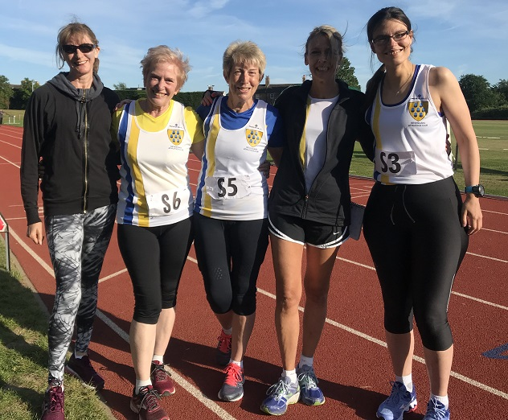

Sevenoaks AC's women achieved their best performance to date as Sylvia Lewis, Lesley Knight, Bet Benn, Jo Young, Anna Humphrey-Taylor and Pauline Dalton secured points at Tonbridge track on 31 May. The club finished third on the day after both Bet and team captain Sylvia competed in four separate events and Pauline kept her powder dry for an emphatic win in the W50 1500m. Despite the excellent showing at Tonbridge, the women stay 5th in the division after three matches.
In the men's match, Graham Dwyer, Geoffrey Kitchener, Rob Peers, Dan Witt, Neil Haggertay, Duncan Cochrane, and Andrew Simpson combined to repeat the team's fourth place as in the first two matches. Possibly the stand-out performance was from M45 Graham who was second in the M35 high jump despite tackling four events in all. The SAC team remains in fourth place in the series.
The results are here. The next match is on Monday 10 June at Gillingham. Interested SAC members please contact
